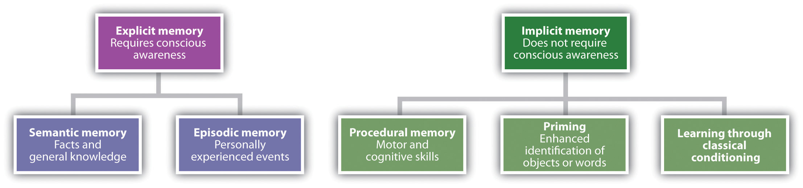
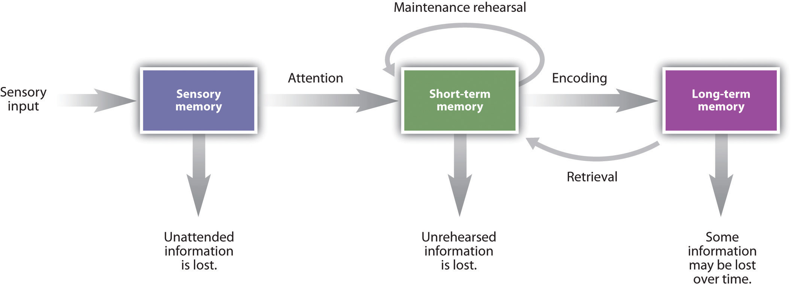
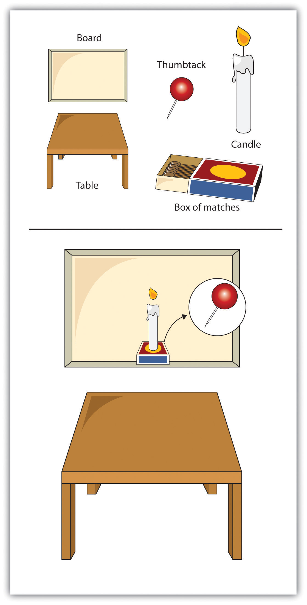

In 1984 Jennifer Thompson was a 22-year-old college student in North Carolina. One night a man broke into her apartment, put a knife to her throat, and raped her. According to her own account, Ms. Thompson studied her rapist throughout the incident with great determination to memorize his face. She said:
I studied every single detail on the rapist’s face. I looked at his hairline; I looked for scars, for tattoos, for anything that would help me identify him. When and if I survived.
Ms. Thompson went to the police that same day to create a sketch of her attacker, relying on what she believed was her detailed memory. Several days later, the police constructed a photographic lineup. Thompson identified Ronald Cotton as the rapist, and she later testified against him at trial. She was positive it was him, with no doubt in her mind.
I was sure. I knew it. I had picked the right guy, and he was going to go to jail. If there was the possibility of a death sentence, I wanted him to die. I wanted to flip the switch.
As positive as she was, it turned out that Jennifer Thompson was wrong. But it was not until after Mr. Cotton had served 11 years in prison for a crime he did not commit that conclusive DNA evidence indicated that Bobby Poole was the actual rapist, and Cotton was released from jail. Jennifer Thompson’s memory had failed her, resulting in a substantial injustice. It took definitive DNA testing to shake her confidence, but she now knows that despite her confidence in her identification, it was wrong. Consumed by guilt, Thompson sought out Cotton when he was released from prison, and they have since become friends (Innocence Project, n.d.; Thompson, 2000).Innocence Project. (n.d.). Ronald Cotton. Retrieved from http://www.innocenceproject.org/Content/72.php; Thompson, J. (2000, June 18). I was certain, but I was wrong. New York Times. Retrieved from http://faculty.washington.edu/gloftus/Other_Information/Legal_Stuff/Articles/News_Articles/Thompson_NYT_6_18_2000.html
Picking Cotton: A Memoir of Injustice and Redemption
Although Jennifer Thompson was positive that it was Ronald Cotton who had raped her, her memory was inaccurate. Conclusive DNA testing later proved that he was not the attacker. Watch this book trailer about the story.
Jennifer Thompson is not the only person to have been fooled by her memory of events. Over the past 10 years, almost 400 people have been released from prison when DNA evidence confirmed that they could not have committed the crime for which they had been convicted. And in more than three-quarters of these cases, the cause of the innocent people being falsely convicted was erroneous eyewitness testimony (Wells, Memon, & Penrod, 2006).Wells, G. L., Memon, A., & Penrod, S. D. (2006). Eyewitness evidence: Improving its probative value. Psychological Science in the Public Interest, 7(2), 45–75.
Eyewitness Testimony
Watch this video for Lesley Stahl’s 60 Minutes segment on this case.
The two subjects of this chapter are memoryThe ability to store and retrieve information over time., defined as the ability to store and retrieve information over time, and cognitionThe processes of acquiring and using knowledge., defined as the processes of acquiring and using knowledge. It is useful to consider memory and cognition in the same chapter because they work together to help us interpret and understand our environments.
Memory and cognition represent the two major interests of cognitive psychologists. The cognitive approach became the most important school of psychology during the 1960s, and the field of psychology has remained in large part cognitive since that time. The cognitive school was influenced in large part by the development of the electronic computer, and although the differences between computers and the human mind are vast, cognitive psychologists have used the computer as a model for understanding the workings of the mind.
Although cognitive psychology began in earnest at about the same time that the electronic computer was first being developed, and although cognitive psychologists have frequently used the computer as a model for understanding how the brain operates, research in cognitive neuroscience has revealed many important differences between brains and computers. The neuroscientist Chris Chatham (2007)Chatham, C. (2007, March 27). 10 important differences between brains and computers. Developing Intelligence. Retrieved from http://scienceblogs.com/developingintelligence/2007/03/why_the_brain_ is_not_like_a_co.php provided the list of differences between brains and computers shown here. You might want to check out the website and the responses to it at http://scienceblogs.com/developingintelligence/2007/03/why_the_brain_is_not_ like_a_co.php.
We will begin the chapter with the study of memory. Our memories allow us to do relatively simple things, such as remembering where we parked our car or the name of the current president of the United States, but also allow us to form complex memories, such as how to ride a bicycle or to write a computer program. Moreover, our memories define us as individuals—they are our experiences, our relationships, our successes, and our failures. Without our memories, we would not have a life.
At least for some things, our memory is very good (Bahrick, 2000).Bahrick, H. P. (2000). Long-term maintenance of knowledge. In E. Tulving & F. I. M. Craik (Eds.), The Oxford handbook of memory (pp. 347–362). New York, NY: Oxford University Press. Once we learn a face, we can recognize that face many years later. We know the lyrics of many songs by heart, and we can give definitions for tens of thousands of words. Mitchell (2006)Mitchell, D. B. (2006). Nonconscious priming after 17 years: Invulnerable implicit memory? Psychological Science, 17(11), 925–928. contacted participants 17 years after they had been briefly exposed to some line drawings in a lab and found that they still could identify the images significantly better than participants who had never seen them.
Figure 8.1 Kim Peek

Kim Peek, the subject of the movie Rain Man, was believed to have memorized the contents of more than 10,000 books. He could read a book in about an hour.
Source: Photo courtesy of Darold A. Treffert, MD, and the Wisconsin Medical Society, http://commons.wikimedia.org/wiki/File:Peek1.jpg.
For some people, memory is truly amazing. Consider, for instance, the case of Kim Peek, who was the inspiration for the Academy Award–winning film Rain Man (Figure 8.1 "Kim Peek" and Note 8.5 "Video Clip: Kim Peek"). Although Peek’s IQ was only 87, significantly below the average of about 100, it is estimated that he memorized more than 10,000 books in his lifetime (Wisconsin Medical Society, n.d.; “Kim Peek,” 2004).Wisconsin Medical Society. (n.d.). Retrieved from http://www.wisconsinmedicalsociety.org/_SAVANT/_PROFILES/kim_peek/_media/video/expedition/video.html; Kim Peek: Savant who was the inspiration for the film Rain Man. (2009, December 23). The Times. Retrieved from http://www.timesonline.co.uk/tol/comment/obituaries/article6965115.ece The Russian psychologist A. R. Luria (2004)Luria, A. (2004). The mind of a mnemonist: A little book about a vast memory. Cambridge, MA: Harvard University Press. has described the abilities of a man known as “S,” who seems to have unlimited memory. S remembers strings of hundreds of random letters for years at a time, and seems in fact to never forget anything.
You can view an interview with Kim Peek and see some of his amazing memory abilities at this link.
In this chapter we will see how psychologists use behavioral responses (such as memory tests and reaction times) to draw inferences about what and how people remember. And we will see that although we have very good memory for some things, our memories are far from perfect (Schacter, 1996).Schacter, D. L. (1996). Searching for memory: The brain, the mind, and the past (1st ed.). New York, NY: Basic Books. The errors that we make are due to the fact that our memories are not simply recording devices that input, store, and retrieve the world around us. Rather, we actively process and interpret information as we remember and recollect it, and these cognitive processes influence what we remember and how we remember it. Because memories are constructed, not recorded, when we remember events we don’t reproduce exact replicas of those events (Bartlett, 1932).Bartlett, F. C. (1932). Remembering. Cambridge, MA: Cambridge University Press.
In the last section of the chapter we will focus primarily on cognition, with a particular consideration for cases in which cognitive processes lead us to distort our judgments or misremember information. We will see that our prior knowledge can influence our memory. People who read the words “dream, sheets, rest, snore, blanket, tired, and bed” and then are asked to remember the words often think that they saw the word sleep even though that word was not in the list (Roediger & McDermott, 1995).Roediger, H. L., & McDermott, K. B. (1995). Creating false memories: Remembering words not presented in lists. Journal of Experimental Psychology: Learning, Memory, and Cognition, 21(4), 803–814. And we will see that in other cases we are influenced by the ease with which we can retrieve information from memory or by the information that we are exposed to after we first learn something.
Although much research in the area of memory and cognition is basic in orientation, the work also has profound influence on our everyday experiences. Our cognitive processes influence the accuracy and inaccuracy of our memories and our judgments, and they lead us to be vulnerable to the types of errors that eyewitnesses such as Jennifer Thompson may make. Understanding these potential errors is the first step in learning to avoid them.
As you can see in Table 8.1 "Memory Conceptualized in Terms of Types, Stages, and Processes", psychologists conceptualize memory in terms of types, in terms of stages, and in terms of processes. In this section we will consider the two types of memory, explicit memory and implicit memory, and then the three major memory stages: sensory, short-term, and long-term (Atkinson & Shiffrin, 1968).Atkinson, R. C., & Shiffrin, R. M. (1968). Human memory: A proposed system and its control processes. In K. Spence (Ed.), The psychology of learning and motivation (Vol. 2). Oxford, England: Academic Press. Then, in the next section, we will consider the nature of long-term memory, with a particular emphasis on the cognitive techniques we can use to improve our memories. Our discussion will focus on the three processes that are central to long-term memory: encoding, storage, and retrieval.
Table 8.1 Memory Conceptualized in Terms of Types, Stages, and Processes
| As types | Explicit memory |
| Implicit memory | |
| As stages | Sensory memory |
| Short-term memory | |
| Long-term memory | |
| As processes | Encoding |
| Storage | |
| Retrieval |
When we assess memory by asking a person to consciously remember things, we are measuring explicit memory. Explicit memoryKnowledge or experiences that can be consciously remembered. refers to knowledge or experiences that can be consciously remembered. As you can see in Figure 8.2 "Types of Memory", there are two types of explicit memory: episodic and semantic. Episodic memoryExplicit memory about the firsthand experiences that we have had. refers to the firsthand experiences that we have had (e.g., recollections of our high school graduation day or of the fantastic dinner we had in New York last year). Semantic memoryExplicit memory of knowledge of facts and concepts about the world. refers to our knowledge of facts and concepts about the world (e.g., that the absolute value of −90 is greater than the absolute value of 9 and that one definition of the word “affect” is “the experience of feeling or emotion”).
Figure 8.2 Types of Memory
Explicit memory is assessed using measures in which the individual being tested must consciously attempt to remember the information. A recall memory testA measure of explicit memory that involves bringing from memory information that has previously been remembered. is a measure of explicit memory that involves bringing from memory information that has previously been remembered. We rely on our recall memory when we take an essay test, because the test requires us to generate previously remembered information. A multiple-choice test is an example of a recognition memory testA measure of explicit memory that involves determining whether information has been seen or learned before., a measure of explicit memory that involves determining whether information has been seen or learned before.
Your own experiences taking tests will probably lead you to agree with the scientific research finding that recall is more difficult than recognition. Recall, such as required on essay tests, involves two steps: first generating an answer and then determining whether it seems to be the correct one. Recognition, as on multiple-choice test, only involves determining which item from a list seems most correct (Haist, Shimamura, & Squire, 1992).Haist, F., Shimamura, A. P., & Squire, L. R. (1992). On the relationship between recall and recognition memory. Journal of Experimental Psychology: Learning, Memory, and Cognition, 18(4), 691–702. Although they involve different processes, recall and recognition memory measures tend to be correlated. Students who do better on a multiple-choice exam will also, by and large, do better on an essay exam (Bridgeman & Morgan, 1996).Bridgeman, B., & Morgan, R. (1996). Success in college for students with discrepancies between performance on multiple-choice and essay tests. Journal of Educational Psychology, 88(2), 333–340.
A third way of measuring memory is known as relearning (Nelson, 1985).Nelson, T. O. (1985). Ebbinghaus’s contribution to the measurement of retention: Savings during relearning. Journal of Experimental Psychology: Learning, Memory, and Cognition, 11(3), 472–478. Measures of relearning (or savings)A measure of explicit memory that involves assessing how much more quickly information is processed or learned when it is studied again after it has already been learned but then forgotten. assess how much more quickly information is processed or learned when it is studied again after it has already been learned but then forgotten. If you have taken some French courses in the past, for instance, you might have forgotten most of the vocabulary you learned. But if you were to work on your French again, you’d learn the vocabulary much faster the second time around. Relearning can be a more sensitive measure of memory than either recall or recognition because it allows assessing memory in terms of “how much” or “how fast” rather than simply “correct” versus “incorrect” responses. Relearning also allows us to measure memory for procedures like driving a car or playing a piano piece, as well as memory for facts and figures.
While explicit memory consists of the things that we can consciously report that we know, implicit memory refers to knowledge that we cannot consciously access. However, implicit memory is nevertheless exceedingly important to us because it has a direct effect on our behavior. Implicit memoryThe influence of experience on behavior, even if the individual is not aware of those influences. refers to the influence of experience on behavior, even if the individual is not aware of those influences. As you can see in Figure 8.2 "Types of Memory", there are three general types of implicit memory: procedural memory, classical conditioning effects, and priming.
Procedural memoryImplicit memory about our often unexplainable knowledge of how to do things. refers to our often unexplainable knowledge of how to do things. When we walk from one place to another, speak to another person in English, dial a cell phone, or play a video game, we are using procedural memory. Procedural memory allows us to perform complex tasks, even though we may not be able to explain to others how we do them. There is no way to tell someone how to ride a bicycle; a person has to learn by doing it. The idea of implicit memory helps explain how infants are able to learn. The ability to crawl, walk, and talk are procedures, and these skills are easily and efficiently developed while we are children despite the fact that as adults we have no conscious memory of having learned them.
A second type of implicit memory is classical conditioning effects, in which we learn, often without effort or awareness, to associate neutral stimuli (such as a sound or a light) with another stimulus (such as food), which creates a naturally occurring response, such as enjoyment or salivation. The memory for the association is demonstrated when the conditioned stimulus (the sound) begins to create the same response as the unconditioned stimulus (the food) did before the learning.
The final type of implicit memory is known as primingChanges in behavior as a result of experiences that have happened frequently or recently., or changes in behavior as a result of experiences that have happened frequently or recently. Priming refers both to the activation of knowledge (e.g., we can prime the concept of “kindness” by presenting people with words related to kindness) and to the influence of that activation on behavior (people who are primed with the concept of kindness may act more kindly).
One measure of the influence of priming on implicit memory is the word fragment test, in which a person is asked to fill in missing letters to make words. You can try this yourself: First, try to complete the following word fragments, but work on each one for only three or four seconds. Do any words pop into mind quickly?
_ i b _ a _ y
_ h _ s _ _ i _ n
_ o _ k
_ h _ i s _
Now read the following sentence carefully:
“He got his materials from the shelves, checked them out, and then left the building.”
Then try again to make words out of the word fragments.
I think you might find that it is easier to complete fragments 1 and 3 as “library” and “book,” respectively, after you read the sentence than it was before you read it. However, reading the sentence didn’t really help you to complete fragments 2 and 4 as “physician” and “chaise.” This difference in implicit memory probably occurred because as you read the sentence, the concept of “library” (and perhaps “book”) was primed, even though they were never mentioned explicitly. Once a concept is primed it influences our behaviors, for instance, on word fragment tests.
Our everyday behaviors are influenced by priming in a wide variety of situations. Seeing an advertisement for cigarettes may make us start smoking, seeing the flag of our home country may arouse our patriotism, and seeing a student from a rival school may arouse our competitive spirit. And these influences on our behaviors may occur without our being aware of them.
One of the most important characteristics of implicit memories is that they are frequently formed and used automatically, without much effort or awareness on our part. In one demonstration of the automaticity and influence of priming effects, John Bargh and his colleagues (Bargh, Chen, & Burrows, 1996)Bargh, J. A., Chen, M., & Burrows, L. (1996). Automaticity of social behavior: Direct effects of trait construct and stereotype activation on action. Journal of Personality & Social Psychology, 71, 230–244. conducted a study in which they showed college students lists of five scrambled words, each of which they were to make into a sentence. Furthermore, for half of the research participants, the words were related to stereotypes of the elderly. These participants saw words such as the following:
in Florida retired live people
bingo man the forgetful plays
The other half of the research participants also made sentences, but from words that had nothing to do with elderly stereotypes. The purpose of this task was to prime stereotypes of elderly people in memory for some of the participants but not for others.
The experimenters then assessed whether the priming of elderly stereotypes would have any effect on the students’ behavior—and indeed it did. When the research participant had gathered all of his or her belongings, thinking that the experiment was over, the experimenter thanked him or her for participating and gave directions to the closest elevator. Then, without the participants knowing it, the experimenters recorded the amount of time that the participant spent walking from the doorway of the experimental room toward the elevator. As you can see in Figure 8.3 "Results From Bargh, Chen, and Burrows, 1996", participants who had made sentences using words related to elderly stereotypes took on the behaviors of the elderly—they walked significantly more slowly as they left the experimental room.
Figure 8.3 Results From Bargh, Chen, and Burrows, 1996

Bargh, Chen, and Burrows (1996) found that priming words associated with the elderly made people walk more slowly.
Source: Adapted from Bargh, J. A., Chen, M., & Burrows, L. (1996). Automaticity of social behavior: Direct effects of trait construct and stereotype activation on action. Journal of Personality & Social Psychology, 71, 230–244.
To determine if these priming effects occurred out of the awareness of the participants, Bargh and his colleagues asked still another group of students to complete the priming task and then to indicate whether they thought the words they had used to make the sentences had any relationship to each other, or could possibly have influenced their behavior in any way. These students had no awareness of the possibility that the words might have been related to the elderly or could have influenced their behavior.
Another way of understanding memory is to think about it in terms of stages that describe the length of time that information remains available to us. According to this approach (see Figure 8.4 "Memory Duration"), information begins in sensory memory, moves to short-term memory, and eventually moves to long-term memory. But not all information makes it through all three stages; most of it is forgotten. Whether the information moves from shorter-duration memory into longer-duration memory or whether it is lost from memory entirely depends on how the information is attended to and processed.
Figure 8.4 Memory Duration
Memory can characterized in terms of stages—the length of time that information remains available to us.
Source: Adapted from Atkinson, R. C., & Shiffrin, R. M. (1968). Human memory: A proposed system and its control processes. In K. Spence (Ed.), The psychology of learning and motivation (Vol. 2). Oxford, England: Academic Press.
Sensory memoryThe brief storage of sensory information. refers to the brief storage of sensory information. Sensory memory is a memory buffer that lasts only very briefly and then, unless it is attended to and passed on for more processing, is forgotten. The purpose of sensory memory is to give the brain some time to process the incoming sensations, and to allow us to see the world as an unbroken stream of events rather than as individual pieces.
Visual sensory memory is known as iconic memoryThe visual sensory memory.. Iconic memory was first studied by the psychologist George Sperling (1960).Sperling, G. (1960). The information available in brief visual presentation. Psychological Monographs, 74(11), 1–29. In his research, Sperling showed participants a display of letters in rows, similar to that shown in Figure 8.5 "Measuring Iconic Memory". However, the display lasted only about 50 milliseconds (1/20 of a second). Then, Sperling gave his participants a recall test in which they were asked to name all the letters that they could remember. On average, the participants could remember only about one-quarter of the letters that they had seen.
Figure 8.5 Measuring Iconic Memory

Sperling (1960) showed his participants displays such as this one for only 1/20th of a second. He found that when he cued the participants to report one of the three rows of letters, they could do it, even if the cue was given shortly after the display had been removed. The research demonstrated the existence of iconic memory.
Source: Adapted from Sperling, G. (1960). The information available in brief visual presentation. Psychological Monographs, 74(11), 1–29.
Sperling reasoned that the participants had seen all the letters but could remember them only very briefly, making it impossible for them to report them all. To test this idea, in his next experiment he first showed the same letters, but then after the display had been removed, he signaled to the participants to report the letters from either the first, second, or third row. In this condition, the participants now reported almost all the letters in that row. This finding confirmed Sperling’s hunch: Participants had access to all of the letters in their iconic memories, and if the task was short enough, they were able to report on the part of the display he asked them to. The “short enough” is the length of iconic memory, which turns out to be about 250 milliseconds (¼ of a second).
Auditory sensory memory is known as echoic memoryThe auditory sensory memory.. In contrast to iconic memories, which decay very rapidly, echoic memories can last as long as 4 seconds (Cowan, Lichty, & Grove, 1990).Cowan, N., Lichty, W., & Grove, T. R. (1990). Properties of memory for unattended spoken syllables. Journal of Experimental Psychology: Learning, Memory, and Cognition, 16(2), 258–268. This is convenient as it allows you—among other things—to remember the words that you said at the beginning of a long sentence when you get to the end of it, and to take notes on your psychology professor’s most recent statement even after he or she has finished saying it.
In some people iconic memory seems to last longer, a phenomenon known as eidetic imagery (or “photographic memory”) in which people can report details of an image over long periods of time. These people, who often suffer from psychological disorders such as autism, claim that they can “see” an image long after it has been presented, and can often report accurately on that image. There is also some evidence for eidetic memories in hearing; some people report that their echoic memories persist for unusually long periods of time. The composer Wolfgang Amadeus Mozart may have possessed eidetic memory for music, because even when he was very young and had not yet had a great deal of musical training, he could listen to long compositions and then play them back almost perfectly (Solomon, 1995).Solomon, M. (1995). Mozart: A life. New York, NY: Harper Perennial.
Most of the information that gets into sensory memory is forgotten, but information that we turn our attention to, with the goal of remembering it, may pass into short-term memory. Short-term memory (STM)Memory where small amounts of information can be kept for more than a few seconds but less than one minute. is the place where small amounts of information can be temporarily kept for more than a few seconds but usually for less than one minute (Baddeley, Vallar, & Shallice, 1990).Baddeley, A. D., Vallar, G., & Shallice, T. (1990). The development of the concept of working memory: Implications and contributions of neuropsychology. In G. Vallar & T. Shallice (Eds.), Neuropsychological impairments of short-term memory (pp. 54–73). New York, NY: Cambridge University Press. Information in short-term memory is not stored permanently but rather becomes available for us to process, and the processes that we use to make sense of, modify, interpret, and store information in STM are known as working memoryThe processes that we use to make sense of, modify, interpret, and store information in STM..
Although it is called “memory,” working memory is not a store of memory like STM but rather a set of memory procedures or operations. Imagine, for instance, that you are asked to participate in a task such as this one, which is a measure of working memory (Unsworth & Engle, 2007).Unsworth, N., & Engle, R. W. (2007). On the division of short-term and working memory: An examination of simple and complex span and their relation to higher order abilities. Psychological Bulletin, 133(6), 1038–1066. Each of the following questions appears individually on a computer screen and then disappears after you answer the question:
| Is 10 × 2 − 5 = 15? (Answer YES OR NO) Then remember “S” | |
| Is 12 ÷ 6 − 2 = 1? (Answer YES OR NO) Then remember “R” | |
| Is 10 × 2 = 5? (Answer YES OR NO) Then remember “P” | |
| Is 8 ÷ 2 − 1 = 1? (Answer YES OR NO) Then remember “T” | |
| Is 6 × 2 − 1 = 8? (Answer YES OR NO) Then remember “U” | |
| Is 2 × 3 − 3 = 0? (Answer YES OR NO) Then remember “Q” |
To successfully accomplish the task, you have to answer each of the math problems correctly and at the same time remember the letter that follows the task. Then, after the six questions, you must list the letters that appeared in each of the trials in the correct order (in this case S, R, P, T, U, Q).
To accomplish this difficult task you need to use a variety of skills. You clearly need to use STM, as you must keep the letters in storage until you are asked to list them. But you also need a way to make the best use of your available attention and processing. For instance, you might decide to use a strategy of “repeat the letters twice, then quickly solve the next problem, and then repeat the letters twice again including the new one.” Keeping this strategy (or others like it) going is the role of working memory’s central executive—the part of working memory that directs attention and processing. The central executive will make use of whatever strategies seem to be best for the given task. For instance, the central executive will direct the rehearsal process, and at the same time direct the visual cortex to form an image of the list of letters in memory. You can see that although STM is involved, the processes that we use to operate on the material in memory are also critical.
Short-term memory is limited in both the length and the amount of information it can hold. Peterson and Peterson (1959)Peterson, L., & Peterson, M. J. (1959). Short-term retention of individual verbal items. Journal of Experimental Psychology, 58(3), 193–198. found that when people were asked to remember a list of three-letter strings and then were immediately asked to perform a distracting task (counting backward by threes), the material was quickly forgotten (see Figure 8.6 "STM Decay"), such that by 18 seconds it was virtually gone.
Figure 8.6 STM Decay

Peterson and Peterson (1959) found that information that was not rehearsed decayed quickly from memory.
Source: Adapted from Peterson, L., & Peterson, M. J. (1959). Short-term retention of individual verbal items. Journal of Experimental Psychology, 58(3), 193–198.
One way to prevent the decay of information from short-term memory is to use working memory to rehearse it. Maintenance rehearsalThe process of repeating information mentally or out loud with the goal of keeping it in short-term memory. is the process of repeating information mentally or out loud with the goal of keeping it in memory. We engage in maintenance rehearsal to keep a something that we want to remember (e.g., a person’s name, e-mail address, or phone number) in mind long enough to write it down, use it, or potentially transfer it to long-term memory.
If we continue to rehearse information it will stay in STM until we stop rehearsing it, but there is also a capacity limit to STM. Try reading each of the following rows of numbers, one row at a time, at a rate of about one number each second. Then when you have finished each row, close your eyes and write down as many of the numbers as you can remember.
019
3586
10295
861059
1029384
75674834
657874104
6550423897
If you are like the average person, you will have found that on this test of working memory, known as a digit span test, you did pretty well up to about the fourth line, and then you started having trouble. I bet you missed some of the numbers in the last three rows, and did pretty poorly on the last one.
The digit span of most adults is between five and nine digits, with an average of about seven. The cognitive psychologist George Miller (1956)Miller, G. A. (1956). The magical number seven, plus or minus two: Some limits on our capacity for processing information. Psychological Review, 63(2), 81–97. referred to “seven plus or minus two” pieces of information as the “magic number” in short-term memory. But if we can only hold a maximum of about nine digits in short-term memory, then how can we remember larger amounts of information than this? For instance, how can we ever remember a 10-digit phone number long enough to dial it?
One way we are able to expand our ability to remember things in STM is by using a memory technique called chunking. ChunkingThe process of organizing information into smaller groupings (chunks), thereby increasing the number of items that can be held in short-term memory. is the process of organizing information into smaller groupings (chunks), thereby increasing the number of items that can be held in STM. For instance, try to remember this string of 12 letters:
XOFCBANNCVTM
You probably won’t do that well because the number of letters is more than the magic number of seven.
Now try again with this one:
MTVCNNABCFOX
Would it help you if I pointed out that the material in this string could be chunked into four sets of three letters each? I think it would, because then rather than remembering 12 letters, you would only have to remember the names of four television stations. In this case, chunking changes the number of items you have to remember from 12 to only four.
Experts rely on chunking to help them process complex information. Herbert Simon and William Chase (1973)Simon, H. A., & Chase, W. G. (1973). Skill in chess. American Scientist, 61(4), 394–403. showed chess masters and chess novices various positions of pieces on a chessboard for a few seconds each. The experts did a lot better than the novices in remembering the positions because they were able to see the “big picture.” They didn’t have to remember the position of each of the pieces individually, but chunked the pieces into several larger layouts. But when the researchers showed both groups random chess positions—positions that would be very unlikely to occur in real games—both groups did equally poorly, because in this situation the experts lost their ability to organize the layouts (see Figure 8.7 "Possible and Impossible Chess Positions"). The same occurs for basketball. Basketball players recall actual basketball positions much better than do nonplayers, but only when the positions make sense in terms of what is happening on the court, or what is likely to happen in the near future, and thus can be chunked into bigger units (Didierjean & Marmèche, 2005).Didierjean, A., & Marmèche, E. (2005). Anticipatory representation of visual basketball scenes by novice and expert players. Visual Cognition, 12(2), 265–283.
Figure 8.7 Possible and Impossible Chess Positions

Experience matters: Experienced chess players are able to recall the positions of the game on the right much better than are those who are chess novices. But the experts do no better than the novices in remembering the positions on the left, which cannot occur in a real game.
If information makes it past short term-memory it may enter long-term memory (LTM)Memory storage that can hold information for days, months, and years., memory storage that can hold information for days, months, and years. The capacity of long-term memory is large, and there is no known limit to what we can remember (Wang, Liu, & Wang, 2003).Wang, Y., Liu, D., & Wang, Y. (2003). Discovering the capacity of human memory. Brain & Mind, 4(2), 189–198. Although we may forget at least some information after we learn it, other things will stay with us forever. In the next section we will discuss the principles of long-term memory.
Although it is useful to hold information in sensory and short-term memory, we also rely on our long-term memory (LTM). We want to remember the name of the new boy in the class, the name of the movie we saw last week, and the material for our upcoming psychology test. Psychological research has produced a great deal of knowledge about long-term memory, and this research can be useful as you try to learn and remember new material (see Table 8.2 "Helpful Memory Techniques Based on Psychological Research"). In this section we will consider this question in terms of the types of processing that we do on the information we want to remember. To be successful, the information that we want to remember must be encoded and stored, and then retrieved.
Table 8.2 Helpful Memory Techniques Based on Psychological Research
| Technique | Description | Useful example |
|---|---|---|
| Use elaborative encoding. | Material is better remembered if it is processed more fully. | Think, for instance, “Proactive interference is like retroactive interference but it occurs in a forward manner.” |
| Make use of the self-reference effect. | Material is better remembered if it is linked to thoughts about the self. | Think, for instance, “I remember a time when I knew the answer to an exam question but couldn’t quite get it to come to mind. This was an example of the tip-of-the-tongue phenomenon.” |
| Be aware of the forgetting curve. | Information that we have learned drops off rapidly with time. | Review the material that you have already studied right before the exam to increase the likelihood it will remain in memory. |
| Make use of the spacing effect. | Information is learned better when it is studied in shorter periods spaced over time. | Study a little bit every day; do not cram at the last minute. |
| Rely on overlearning. | We can continue to learn even after we think we know the information perfectly. | Keep studying, even if you think you already have it down. |
| Use context-dependent retrieval. | We have better retrieval when it occurs in the same situation in which we learned the material. | If possible, study under conditions similar to the conditions in which you will take the exam. |
| Use state-dependent retrieval. | We have better retrieval when we are in the same psychological state as we were when we learned the material. | Many possibilities, but don’t study under the influence of drugs or alcohol, unless you plan to use them on the day of the exam (which is not recommended). |
EncodingThe process by which we place the things that we experience into memory. is the process by which we place the things that we experience into memory. Unless information is encoded, it cannot be remembered. I’m sure you’ve been to a party where you’ve been introduced to someone and then—maybe only seconds later—you realize that you do not remember the person’s name. Of course it’s not really surprising that you can’t remember the name, because you probably were distracted and you never encoded the name to begin with.
Not everything we experience can or should be encoded. We tend to encode things that we need to remember and not bother to encode things that are irrelevant. Look at Figure 8.8 "Pennies in Different Styles", which shows different images of U.S. pennies. Can you tell which one is the real one? Nickerson and Adams (1979)Nickerson, R. S., & Adams, M. J. (1979). Long-term memory for a common object. Cognitive Psychology, 11(3), 287–307. found that very few of the U.S. participants they tested could identify the right one. We see pennies a lot, but we don’t bother to encode their features.
Figure 8.8 Pennies in Different Styles
Can you identify the “real” penny? We tend to have poor memory for things that don’t matter, even if we see them frequently.
One way to improve our memory is to use better encoding strategies. Some ways of studying are more effective than others. Research has found that we are better able to remember information if we encode it in a meaningful way. When we engage in elaborative encodingLearning by processing new information in ways that make it more relevant. we process new information in ways that make it more relevant or meaningful (Craik & Lockhart, 1972; Harris & Qualls, 2000).Craik, F. I., & Lockhart, R. S. (1972). Levels of processing: A framework for memory research. Journal of Verbal Learning & Verbal Behavior, 11(6), 671–684; Harris, J. L., & Qualls, C. D. (2000). The association of elaborative or maintenance rehearsal with age, reading comprehension and verbal working memory performance. Aphasiology, 14(5–6), 515–526.
Imagine that you are trying to remember the characteristics of the different schools of psychology we discussed in Chapter 1 "Introducing Psychology". Rather than simply trying to remember the schools and their characteristics, you might try to relate the information to things you already know. For instance, you might try to remember the fundamentals of the cognitive school of psychology by linking the characteristics to the computer model. The cognitive school focuses on how information is input, processed, and retrieved, and you might think about how computers do pretty much the same thing. You might also try to organize the information into meaningful units. For instance, you might link the cognitive school to structuralism because both were concerned with mental processes. You also might try to use visual cues to help you remember the information. You might look at the image of Freud and imagine what he looked like as a child. That image might help you remember that childhood experiences were an important part of Freudian theory. Each person has his or her unique way of elaborating on information; the important thing is to try to develop unique and meaningful associations among the materials.
In an important study showing the effectiveness of elaborative encoding, Rogers, Kuiper, and Kirker (1977)Rogers, T. B., Kuiper, N. A., & Kirker, W. S. (1977). Self-reference and the encoding of personal information. Journal of Personality & Social Psychology, 35(9), 677–688. studied how people recalled information that they had learned under different processing conditions. All the participants were presented with the same list of 40 adjectives to learn, but through the use of random assignment, the participants were given one of four different sets of instructions about how to process the adjectives.
Participants assigned to the structural task condition were asked to judge whether the word was printed in uppercase or lowercase letters. Participants in the phonemic task condition were asked whether or not the word rhymed with another given word. In the semantic task condition, the participants were asked if the word was a synonym of another word. And in the self-reference task condition, participants were asked to indicate whether or not the given adjective was or was not true of themselves. After completing the specified task, each participant was asked to recall as many adjectives as he or she could remember.
Rogers and his colleagues hypothesized that different types of processing would have different effects on memory. As you can see in Figure 8.9 "Self-Reference Effect Results", the students in the self-reference task condition recalled significantly more adjectives than did students in any other condition. This finding, known as the self-reference effect, is powerful evidence that the self-concept helps us organize and remember information. The next time you are studying for an exam, you might try relating the material to your own experiences. The self-reference effect suggests that doing so will help you better remember the information (Symons & Johnson, 1997).Symons, C. S., & Johnson, B. T. (1997). The self-reference effect in memory: A meta-analysis. Psychological Bulletin, 121(3), 371–394.
Figure 8.9 Self-Reference Effect Results
Participants recalled the same words significantly better when they were processed in relation to the self than when they were processed in other ways.
Source: Adapted from Rogers, T. B., Kuiper, N. A., & Kirker, W. S. (1977). Self-reference and the encoding of personal information. Journal of Personality & Social Psychology, 35(9), 677–688.
Hermann Ebbinghaus (1850–1909) was a pioneer of the study of memory. In this section we consider three of his most important findings, each of which can help you improve your memory. In his research, in which he was the only research participant, Ebbinghaus practiced memorizing lists of nonsense syllables, such as the following:
DIF, LAJ, LEQ, MUV, WYC, DAL, SEN, KEP, NUD
You can imagine that because the material that he was trying to learn was not at all meaningful, it was not easy to do. Ebbinghaus plotted how many of the syllables he could remember against the time that had elapsed since he had studied them. He discovered an important principle of memory: Memory decays rapidly at first, but the amount of decay levels off with time (Figure 8.10 "Ebbinghaus Forgetting Curve"). Although Ebbinghaus looked at forgetting after days had elapsed, the same effect occurs on longer and shorter time scales. Bahrick (1984)Bahrick, H. P. (1984). Semantic memory content in permastore: Fifty years of memory for Spanish learned in school. Journal of Experimental Psychology: General, 113(1), 1–29. found that students who took a Spanish language course forgot about one half of the vocabulary that they had learned within three years, but that after that time their memory remained pretty much constant. Forgetting also drops off quickly on a shorter time frame. This suggests that you should try to review the material that you have already studied right before you take an exam; that way, you will be more likely to remember the material during the exam.
Figure 8.10 Ebbinghaus Forgetting Curve

Hermann Ebbinghaus found that memory for information drops off rapidly at first but then levels off after time.
Ebbinghaus also discovered another important principle of learning, known as the spacing effect. The spacing effectThe fact that learning is better when the same amount of study is spread out over periods of time than it is when it occurs closer together or at the same time. refers to the fact that learning is better when the same amount of study is spread out over periods of time than it is when it occurs closer together or at the same time. This means that even if you have only a limited amount of time to study, you’ll learn more if you study continually throughout the semester (a little bit every day is best) than if you wait to cram at the last minute before your exam (Figure 8.11 "Effects of Massed Versus Distributed Practice on Learning"). Another good strategy is to study and then wait as long as you can before you forget the material. Then review the information and again wait as long as you can before you forget it. (This probably will be a longer period of time than the first time.) Repeat and repeat again. The spacing effect is usually considered in terms of the difference between distributed practice (practice that is spread out over time) and massed practice (practice that comes in one block), with the former approach producing better memory.
Figure 8.11 Effects of Massed Versus Distributed Practice on Learning

The spacing effect refers to the fact that memory is better when it is distributed rather than massed. Leslie, Lee Ann, and Nora all studied for four hours total, but the students who spread out their learning into smaller study sessions did better on the exam.
Ebbinghaus also considered the role of overlearning—that is, continuing to practice and study even when we think that we have mastered the material. Ebbinghaus and other researchers have found that overlearning helps encoding (Driskell, Willis, & Copper, 1992).Driskell, J. E., Willis, R. P., & Copper, C. (1992). Effect of overlearning on retention. Journal of Applied Psychology, 77(5), 615–622. Students frequently think that they have already mastered the material but then discover when they get to the exam that they have not. The point is clear: Try to keep studying and reviewing, even if you think you already know all the material.
Even when information has been adequately encoded and stored, it does not do us any good if we cannot retrieve it. RetrievalThe process of reactivating information that has been stored in memory. refers to the process of reactivating information that has been stored in memory. You can get an idea of the difficulty posed by retrieval by simply reading each of the words (but not the categories) in the sidebar below to someone. Tell the person that after you have read all the words, you will ask her to recall the words.
After you read the list to your friend, give her enough time to write down all the words that she can recall. Make sure that she cannot recall any more and then, for the words that were not listed, prompt your friend with some of the category names: “Do you remember any words that were furniture? Do you remember any words that were tools?” I think you will find that the category names, which serve as retrieval cues, will help your friend remember information that she could not retrieve otherwise.
Try this test of the ability to retrieve information with a classmate. The instructions are in the text.
| Apple | (Fruit) |
| Dresser | (Furniture) |
| Sander | (Tool) |
| Pomegranate | (Fruit) |
| Sunflower | (Flower) |
| Tangerine | (Fruit) |
| Chair | (Furniture) |
| Peony | (Flower) |
| Banana | (Fruit) |
| Sofa | (Furniture) |
| Bench | (Furniture) |
| Strawberry | (Fruit) |
| Television stand | (Furniture) |
| Magnolia | (Flower) |
| Rose | (Flower) |
| Wrench | (Tool) |
| Screwdriver | (Tool) |
| Dahlia | (Flower) |
| Drill press | (Tool) |
| Hammer | (Tool) |
We’ve all experienced retrieval failure in the form of the frustrating tip-of-the-tongue phenomenonThe experience of being certain that we know something that we are trying to recall, but yet we cannot quite come up with it., in which we are certain that we know something that we are trying to recall but cannot quite come up with it. You can try this one on your friends as well. Read your friend the names of the 10 states listed in the sidebar below, and ask him to name the capital city of each state. Now, for the capital cities that your friend can’t name, give him just the first letter of the capital city. You’ll probably find that having the first letters of the cities helps with retrieval. The tip-of-the-tongue experience is a very good example of the inability to retrieve information that is actually stored in memory.
Try this demonstration of the tip-of-the-tongue phenomenon with a classmate. Instructions are in the text.
| Georgia | (Atlanta) |
| Maryland | (Annapolis) |
| California | (Sacramento) |
| Louisiana | (Baton Rouge) |
| Florida | (Tallahassee) |
| Colorado | (Denver) |
| New Jersey | (Trenton) |
| Arizona | (Phoenix) |
| Nebraska | (Lincoln) |
| Kentucky | (Frankfort) |
We are more likely to be able to retrieve items from memory when conditions at retrieval are similar to the conditions under which we encoded them. Context-dependent learningAn increase in retrieval when the external situation in which information is learned matches the situation in which it is remembered. refers to an increase in retrieval when the external situation in which information is learned matches the situation in which it is remembered. Godden and Baddeley (1975)Godden, D. R., & Baddeley, A. D. (1975). Context-dependent memory in two natural environments: On land and underwater. British Journal of Psychology, 66(3), 325–331. conducted a study to test this idea using scuba divers. They asked the divers to learn a list of words either when they were on land or when they were underwater. Then they tested the divers on their memory, either in the same or the opposite situation. As you can see in Figure 8.12 "Results From Godden and Baddeley, 1975", the divers’ memory was better when they were tested in the same context in which they had learned the words than when they were tested in the other context.
Figure 8.12 Results From Godden and Baddeley, 1975

Godden and Baddeley (1975) tested the memory of scuba divers to learn and retrieve information in different contexts and found strong evidence for context-dependent learning.
Source: Adapted from Godden, D. R., & Baddeley, A. D. (1975). Context-dependent memory in two natural environments: On land and underwater. British Journal of Psychology, 66(3), 325–331.
You can see that context-dependent learning might also be important in improving your memory. For instance, you might want to try to study for an exam in a situation that is similar to the one in which you are going to take the exam.
Whereas context-dependent learning refers to a match in the external situation between learning and remembering, state-dependent learningAn increase in retrieval that occurs when the individual is tested in the same physiological or psychological state as during encoding. refers to superior retrieval of memories when the individual is in the same physiological or psychological state as during encoding. Research has found, for instance, that animals that learn a maze while under the influence of one drug tend to remember their learning better when they are tested under the influence of the same drug than when they are tested without the drug (Jackson, Koek, & Colpaert, 1992).Jackson, A., Koek, W., & Colpaert, F. (1992). NMDA antagonists make learning and recall state-dependent. Behavioural Pharmacology, 3(4), 415. And research with humans finds that bilinguals remember better when tested in the same language in which they learned the material (Marian & Kaushanskaya, 2007).Marian, V. & Kaushanskaya, M. (2007). Language context guides memory content. Psychonomic Bulletin and Review, 14(5), 925–933. Mood states may also produce state-dependent learning. People who learn information when they are in a bad (rather than a good) mood find it easier to recall these memories when they are tested while they are in a bad mood, and vice versa. It is easier to recall unpleasant memories than pleasant ones when we’re sad, and easier to recall pleasant memories than unpleasant ones when we’re happy (Bower, 1981; Eich, 2008).Bower, G. H. (1981). Mood and memory. American Psychologist, 36, 129–148; Eich, E. (2008). Mood and memory at 26: Revisiting the idea of mood mediation in drug-dependent and place-dependent memory. In M. A. Gluck, J. R. Anderson, & S. M. Kosslyn (Eds.), Memory and mind: A festschrift for Gordon H. Bower (pp. 247–260). Mahwah, NJ: Lawrence Erlbaum Associates.
Variations in the ability to retrieve information are also seen in the serial position curve. When we give people a list of words one at a time (e.g., on flashcards) and then ask them to recall them, the results look something like those in Figure 8.13 "The Serial Position Curve". People are able to retrieve more words that were presented to them at the beginning and the end of the list than they are words that were presented in the middle of the list. This pattern, known as the serial position curve, is caused by two retrieval phenomenon: The primacy effectThe tendency to better remember stimuli that are presented early in a list. refers to a tendency to better remember stimuli that are presented early in a list. The recency effectThe tendency to better remember stimuli that are presented later in a list. refers to the tendency to better remember stimuli that are presented later in a list.
Figure 8.13 The Serial Position Curve
The serial position curve is the result of both primacy effects and recency effects.
There are a number of explanations for primacy and recency effects, but one of them is in terms of the effects of rehearsal on short-term and long-term memory (Baddeley, Eysenck, & Anderson, 2009).Baddeley, A., Eysenck, M. W., & Anderson, M. C. (2009). Memory. New York, NY: Psychology Press. Because we can keep the last words that we learned in the presented list in short-term memory by rehearsing them before the memory test begins, they are relatively easily remembered. So the recency effect can be explained in terms of maintenance rehearsal in short-term memory. And the primacy effect may also be due to rehearsal—when we hear the first word in the list we start to rehearse it, making it more likely that it will be moved from short-term to long-term memory. And the same is true for the other words that come early in the list. But for the words in the middle of the list, this rehearsal becomes much harder, making them less likely to be moved to LTM.
In some cases our existing memories influence our new learning. This may occur either in a backward way or a forward way. Retroactive interferenceMemory impairment that occurs when learning something new impairs memory for information that was learned earlier. occurs when learning something new impairs our ability to retrieve information that was learned earlier. For example, if you have learned to program in one computer language, and then you learn to program in another similar one, you may start to make mistakes programming the first language that you never would have made before you learned the new one. In this case the new memories work backward (retroactively) to influence retrieval from memory that is already in place.
In contrast to retroactive interference, proactive interference works in a forward direction. Proactive interferenceMemory impairment that occurs when earlier learning impairs our ability to encode information that we try to learn later. occurs when earlier learning impairs our ability to encode information that we try to learn later. For example, if we have learned French as a second language, this knowledge may make it more difficult, at least in some respects, to learn a third language (say Spanish), which involves similar but not identical vocabulary.
Figure 8.14 Proactive and Retroactive Interference
Retroactive and proactive interference can both influence memory.
Memories that are stored in LTM are not isolated but rather are linked together into categoriesA network of associated memories that have features in common with each other.—networks of associated memories that have features in common with each other. Forming categories, and using categories to guide behavior, is a fundamental part of human nature. Associated concepts within a category are connected through spreading activation, which occurs when activating one element of a category activates other associated elements. For instance, because tools are associated in a category, reminding people of the word “screwdriver” will help them remember the word “wrench.” And, when people have learned lists of words that come from different categories (e.g., as in Note 8.33 "Retrieval Demonstration"), they do not recall the information haphazardly. If they have just remembered the word “wrench,” they are more likely to remember the word “screwdriver” next than they are to remember the word “dahlia,” because the words are organized in memory by category and because “dahlia” is activated by spreading activation from “wrench” (Srull & Wyer, 1989).Srull, T., & Wyer, R. (1989). Person memory and judgment. Psychological Review, 96(1), 58–83.
Some categories have defining features that must be true of all members of the category. For instance, all members of the category “triangles” have three sides, and all members of the category “birds” lay eggs. But most categories are not so well-defined; the members of the category share some common features, but it is impossible to define which are or are not members of the category. For instance, there is no clear definition of the category “tool.” Some examples of the category, such as a hammer and a wrench, are clearly and easily identified as category members, whereas other members are not so obvious. Is an ironing board a tool? What about a car?
Members of categories (even those with defining features) can be compared to the category prototypeThe member of the category that is most average or typical of the category., which is the member of the category that is most average or typical of the category. Some category members are more prototypical of, or similar to, the category than others. For instance, some category members (robins and sparrows) are highly prototypical of the category “birds,” whereas other category members (penguins and ostriches) are less prototypical. We retrieve information that is prototypical of a category faster than we retrieve information that is less prototypical (Rosch, 1975).Rosch, E. (1975). Cognitive representations of semantic categories. Journal of Experimental Psychology: General, 104(3), 192–233.
Mental categories are sometimes referred to as schemasA pattern of knowledge in long-term memory that helps us organize information.—patterns of knowledge in long-term memory that help us organize information. We have schemas about objects (that a triangle has three sides and may take on different angles), about people (that Sam is friendly, likes to golf, and always wears sandals), about events (the particular steps involved in ordering a meal at a restaurant), and about social groups (we call these group schemas stereotypes).
Schemas are important in part because they help us remember new information by providing an organizational structure for it. Read the following paragraph (Bransford & Johnson, 1972)Bransford, J. D., & Johnson, M. K. (1972). Contextual prerequisites for understanding: Some investigations of comprehension and recall. Journal of Verbal Learning & Verbal Behavior, 11(6), 717–726. and then try to write down everything you can remember.
The procedure is actually quite simple. First you arrange things into different groups. Of course, one pile may be sufficient depending on how much there is to do. If you have to go somewhere else due to lack of facilities, that is the next step; otherwise you are pretty well set. It is important not to overdo things. That is, it is better to do too few things at once than too many. In the short run this may not seem important, but complications can easily arise. A mistake can be expensive as well. At first the whole procedure will seem complicated. Soon, however, it will become just another facet of life. It is difficult to foresee any end to the necessity for this task in the immediate future, but then one never can tell. After the procedure is completed, one arranges the materials into different groups again. Then they can be put into their appropriate places. Eventually they will be used once more and the whole cycle will then have to be repeated. However, that is part of life.
It turns out that people’s memory for this information is quite poor, unless they have been told ahead of time that the information describes “doing the laundry,” in which case their memory for the material is much better. This demonstration of the role of schemas in memory shows how our existing knowledge can help us organize new information, and how this organization can improve encoding, storage, and retrieval.
Just as information is stored on digital media such as DVDs and flash drives, the information in LTM must be stored in the brain. The ability to maintain information in LTM involves a gradual strengthening of the connections among the neurons in the brain. When pathways in these neural networks are frequently and repeatedly fired, the synapses become more efficient in communicating with each other, and these changes create memory. This process, known as long-term potentiation (LTP)The development of memory that occurs through strengthening of the synaptic connections between neurons., refers to the strengthening of the synaptic connections between neurons as result of frequent stimulation (Lynch, 2002).Lynch, G. (2002). Memory enhancement: The search for mechanism-based drugs. Nature Neuroscience, 5(Suppl.), 1035–1038. Drugs that block LTP reduce learning, whereas drugs that enhance LTP increase learning (Lynch et al., 1991).Lynch, G., Larson, J., Staubli, U., Ambros-Ingerson, J., Granger, R., Lister, R. G.,…Weingartner, H. J. (1991). Long-term potentiation and memory operations in cortical networks. In C. A. Wickliffe, M. Corballis, & G. White (Eds.), Perspectives on cognitive neuroscience (pp. 110–131). New York, NY: Oxford University Press. Because the new patterns of activation in the synapses take time to develop, LTP happens gradually. The period of time in which LTP occurs and in which memories are stored is known as the period of consolidation.
Memory is not confined to the cortex; it occurs through sophisticated interactions between new and old brain structures (Figure 8.17 "Schematic Image of Brain With Hippocampus, Amygdala, and Cerebellum Highlighted"). One of the most important brain regions in explicit memory is the hippocampus, which serves as a preprocessor and elaborator of information (Squire, 1992).Squire, L. R. (1992). Memory and the hippocampus: A synthesis from findings with rats, monkeys, and humans. Psychological Review, 99(2), 195–231. The hippocampus helps us encode information about spatial relationships, the context in which events were experienced, and the associations among memories (Eichenbaum, 1999).Eichenbaum, H. (1999). Conscious awareness, memory, and the hippocampus. Nature Neuroscience, 2(9), 775–776. The hippocampus also serves in part as a switching point that holds the memory for a short time and then directs the information to other parts of the brain, such as the cortex, to actually do the rehearsing, elaboration, and long-term storage (Jonides, Lacey, & Nee, 2005).Jonides, J., Lacey, S. C., & Nee, D. E. (2005). Processes of working memory in mind and brain. Current Directions in Psychological Science, 14(1), 2–5. Without the hippocampus, which might be described as the brain’s “librarian,” our explicit memories would be inefficient and disorganized.
Figure 8.17 Schematic Image of Brain With Hippocampus, Amygdala, and Cerebellum Highlighted
Different brain structures help us remember different types of information. The hippocampus is particularly important in explicit memories, the cerebellum is particularly important in implicit memories, and the amygdala is particularly important in emotional memories.
While the hippocampus is handling explicit memory, the cerebellum and the amygdala are concentrating on implicit and emotional memories, respectively. Research shows that the cerebellum is more active when we are learning associations and in priming tasks, and animals and humans with damage to the cerebellum have more difficulty in classical conditioning studies (Krupa, Thompson, & Thompson, 1993; Woodruff-Pak, Goldenberg, Downey-Lamb, Boyko, & Lemieux, 2000).Krupa, D. J., Thompson, J. K., & Thompson, R. F. (1993). Localization of a memory trace in the mammalian brain. Science, 260(5110), 989–991; Woodruff-Pak, D. S., Goldenberg, G., Downey-Lamb, M. M., Boyko, O. B., & Lemieux, S. K. (2000). Cerebellar volume in humans related to magnitude of classical conditioning. Neuroreport: For Rapid Communication of Neuroscience Research, 11(3), 609–615. The storage of many of our most important emotional memories, and particularly those related to fear, is initiated and controlled by the amygdala (Sigurdsson, Doyère, Cain, & LeDoux, 2007).Sigurdsson, T., Doyère, V., Cain, C. K., & LeDoux, J. E. (2007). Long-term potentiation in the amygdala: A cellular mechanism of fear learning and memory. Neuropharmacology, 52(1), 215–227.
Evidence for the role of different brain structures in different types of memories comes in part from case studies of patients who suffer from amnesiaA memory disorder that involves the inability to remember information., a memory disorder that involves the inability to remember information. As with memory interference effects, amnesia can work in either a forward or a backward direction, affecting retrieval or encoding. For people who suffer damage to the brain, for instance, as a result of a stroke or other trauma, the amnesia may work backward. The outcome is retrograde amnesiaA memory disorder that involves the inability to retrieve events that occurred before a given time., a memory disorder that produces an inability to retrieve events that occurred before a given time. Demonstrating the fact that LTP takes time (the process of consolidation), retrograde amnesia is usually more severe for memories that occurred just prior to the trauma than it is for older memories, and events that occurred just before the event that caused memory loss may never be recovered because they were never completely encoded.
Figure 8.18 Scott Bolzan

Scott Bolzan is a motivational speaker, an entrepreneur, and a former NFL football player. In December 2008, he suffered a brain injury that has left him with profound retrograde amnesia. You can read more about him here: http://abcnews.go.com/Nightline/amnesia-man-hits-head-loses-memories/story?id=10396719.
Source: Photo courtesy of Scott Bolzan, http://commons.wikimedia.org/wiki/File:Scott_Bolzan.jpeg.
Organisms with damage to the hippocampus develop a type of amnesia that works in a forward direction to affect encoding, known as anterograde amnesia. Anterograde amnesiaA memory disorder that involves the inability to transfer information from short-term to long-term memory. is the inability to transfer information from short-term into long-term memory, making it impossible to form new memories. One well-known case study was a man named Henry Gustav Molaison (before he died in 2008, he was referred to only as H. M.) who had parts of his hippocampus removed to reduce severe seizures (Corkin, Amaral, González, Johnson, & Hyman, 1997).Corkin, S., Amaral, D. G., González, R. G., Johnson, K. A., & Hyman, B. T. (1997). H. M.’s medial temporal lobe lesion: Findings from magnetic resonance imaging. The Journal of Neuroscience, 17(10), 3964–3979. Following the operation, Molaison developed virtually complete anterograde amnesia. Although he could remember most of what had happened before the operation, and particularly what had occurred early in his life, he could no longer create new memories. Molaison was said to have read the same magazines over and over again without any awareness of having seen them before.
Cases of anterograde amnesia also provide information about the brain structures involved in different types of memory (Bayley & Squire, 2005; Helmuth, 1999; Paller, 2004).Bayley, P. J., & Squire, L. R. (2005). Failure to acquire new semantic knowledge in patients with large medial temporal lobe lesions. Hippocampus, 15(2), 273–280; Helmuth, Laura. (1999). New role found for the hippocampus. Science, 285, 1339–1341; Paller, K. A. (2004). Electrical signals of memory and of the awareness of remembering. Current Directions in Psychological Science, 13(2), 49–55. Although Molaison’s explicit memory was compromised because his hippocampus was damaged, his implicit memory was not (because his cerebellum was intact). He could learn to trace shapes in a mirror, a task that requires procedural memory, but he never had any explicit recollection of having performed this task or of the people who administered the test to him.
Although some brain structures are particularly important in memory, this does not mean that all memories are stored in one place. The American psychologist Karl Lashley (1929)Lashley, K. S. (1929). The effects of cerebral lesions subsequent to the formation of the maze habit: Localization of the habit. In Brain mechanisms and intelligence: A quantitative study of injuries to the brain (pp. 86–108). Chicago, IL: University of Chicago Press. attempted to determine where memories were stored in the brain by teaching rats how to run mazes, and then lesioning different brain structures to see if they were still able to complete the maze. This idea seemed straightforward, and Lashley expected to find that memory was stored in certain parts of the brain. But he discovered that no matter where he removed brain tissue, the rats retained at least some memory of the maze, leading him to conclude that memory isn’t located in a single place in the brain, but rather is distributed around it.
Long-term potentiation occurs as a result of changes in the synapses, which suggests that chemicals, particularly neurotransmitters and hormones, must be involved in memory. There is quite a bit of evidence that this is true. Glutamate, a neurotransmitter and a form of the amino acid glutamic acid, is perhaps the most important neurotransmitter in memory (McEntee & Crook, 1993).McEntee, W., & Crook, T. (1993). Glutamate: Its role in learning, memory, and the aging brain. Psychopharmacology, 111(4), 391–401. When animals, including people, are under stress, more glutamate is secreted, and this glutamate can help them remember (McGaugh, 2003).McGaugh, J. L. (2003). Memory and emotion: The making of lasting memories. New York, NY: Columbia University Press. The neurotransmitter serotonin is also secreted when animals learn, and epinephrine may also increase memory, particularly for stressful events (Maki & Resnick, 2000; Sherwin, 1998).Maki, P. M., & Resnick, S. M. (2000). Longitudinal effects of estrogen replacement therapy on PET cerebral blood flow and cognition. Neurobiology of Aging, 21, 373–383; Sherwin, B. B. (1998). Estrogen and cognitive functioning in women. Proceedings of the Society for Experimental Biological Medicine, 217, 17–22. Estrogen, a female sex hormone, also seems critical, because women who are experiencing menopause, along with a reduction in estrogen, frequently report memory difficulties (Chester, 2001).Chester, B. (2001). Restoring remembering: Hormones and memory. McGill Reporter, 33(10). Retrieved from http://www.mcgill.ca/reporter/33/10/sherwin
Our knowledge of the role of biology in memory suggests that it might be possible to use drugs to improve our memories, and Americans spend several hundred million dollars per year on memory supplements with the hope of doing just that. Yet controlled studies comparing memory enhancers, including Ritalin, methylphenidate, ginkgo biloba, and amphetamines, with placebo drugs find very little evidence for their effectiveness (Gold, Cahill, & Wenk, 2002; McDaniel, Maier, & Einstein, 2002).Gold, P. E., Cahill, L., & Wenk, G. L. (2002). Ginkgo biloba: A cognitive enhancer? Psychological Science in the Public Interest, 3(1), 2–11; McDaniel, M. A., Maier, S. F., & Einstein, G. O. (2002). “Brain-specific” nutrients: A memory cure? Psychological Science in the Public Interest, 3(1), 12–38. Memory supplements are usually no more effective than drinking a sugared soft drink, which also releases glucose and thus improves memory slightly. This is not to say that we cannot someday create drugs that will significantly improve our memory. It is likely that this will occur in the future, but the implications of these advances are as yet unknown (Farah et al., 2004; Turner & Sahakian, 2006).Farah, M. J., Illes, J., Cook-Deegan, R., Gardner, H., Kandel, E., King, P.,…Wolpe, P. R. (2004). Neurocognitive enhancement: What can we do and what should we do? Nature Reviews Neuroscience, 5(5), 421–425; Turner, D. C., & Sahakian, B. J. (2006). Analysis of the cognitive enhancing effects of modafinil in schizophrenia. In J. L. Cummings (Ed.), Progress in neurotherapeutics and neuropsychopharmacology (pp. 133–147). New York, NY: Cambridge University Press.
Although the most obvious potential use of drugs is to attempt to improve memory, drugs might also be used to help us forget. This might be desirable in some cases, such as for those suffering from posttraumatic stress disorder (PTSD) who are unable to forget disturbing memories. Although there are no existing therapies that involve using drugs to help people forget, it is possible that they will be available in the future. These possibilities will raise some important ethical issues: Is it ethical to erase memories, and if it is, is it desirable to do so? Perhaps the experience of emotional pain is a part of being a human being. And perhaps the experience of emotional pain may help us cope with the trauma.
As we have seen, our memories are not perfect. They fail in part due to our inadequate encoding and storage, and in part due to our inability to accurately retrieve stored information. But memory is also influenced by the setting in which it occurs, by the events that occur to us after we have experienced an event, and by the cognitive processes that we use to help us remember. Although our cognition allows us to attend to, rehearse, and organize information, cognition may also lead to distortions and errors in our judgments and our behaviors.
In this section we consider some of the cognitive biases that are known to influence humans. Cognitive biasesErrors in memory or judgment that are caused by the inappropriate use of cognitive processes. are errors in memory or judgment that are caused by the inappropriate use of cognitive processes (Table 8.3 "Cognitive Processes That Pose Threats to Accuracy"). The study of cognitive biases is important both because it relates to the important psychological theme of accuracy versus inaccuracy in perception, and because being aware of the types of errors that we may make can help us avoid them and therefore improve our decision-making skills.
Table 8.3 Cognitive Processes That Pose Threats to Accuracy
| Cognitive process | Description | Potential threat to accuracy |
|---|---|---|
| Source monitoring | The ability to accurately identify the source of a memory | Uncertainty about the source of a memory may lead to mistaken judgments. |
| Confirmation bias | The tendency to verify and confirm our existing memories rather than to challenge and disconfirm them | Once beliefs become established, they become self-perpetuating and difficult to change. |
| Functional fixedness | When schemas prevent us from seeing and using information in new and nontraditional ways | Creativity may be impaired by the overuse of traditional, expectancy-based thinking. |
| Misinformation effect | Errors in memory that occur when new but incorrect information influences existing accurate memories | Eyewitnesses who are questioned by the police may change their memories of what they observed at the crime scene. |
| Overconfidence | When we are more certain that our memories and judgments are accurate than we should be | Eyewitnesses may be very confident that they have accurately identified a suspect, even though their memories are incorrect. |
| Salience | When some stimuli, (e.g., those that are colorful, moving, or unexpected) grab our attention and make them more likely to be remembered | We may base our judgments on a single salient event while we ignore hundreds of other equally informative events that we do not see. |
| Representativeness heuristic | Tendency to make judgments according to how well the event matches our expectations | After a coin has come up “heads” many times in a row, we may erroneously think that the next flip is more likely to be “tails” (the gambler’s fallacy). |
| Availability heuristic | Idea that things that come to mind easily are seen as more common | We may overestimate the crime statistics in our own area, because these crimes are so easy to recall. |
| Cognitive accessibility | Idea that some memories are more highly activated than others | We may think that we contributed more to a project than we really did because it is so easy to remember our own contributions. |
| Counterfactual thinking | When we “replay” events such that they turn out differently (especially when only minor changes in the events leading up to them make a difference) | We may feel particularly bad about events that might not have occurred if only a small change had occurred before them. |
One potential error in memory involves mistakes in differentiating the sources of information. Source monitoringThe ability to accurately identify the source of a memory. refers to the ability to accurately identify the source of a memory. Perhaps you’ve had the experience of wondering whether you really experienced an event or only dreamed or imagined it. If so, you wouldn’t be alone. Rassin, Merkelbach, and Spaan (2001)Rassin, E., Merckelbach, H., & Spaan, V. (2001). When dreams become a royal road to confusion: Realistic dreams, dissociation, and fantasy proneness. Journal of Nervous and Mental Disease, 189(7), 478–481. reported that up to 25% of college students reported being confused about real versus dreamed events. Studies suggest that people who are fantasy-prone are more likely to experience source monitoring errors (Winograd, Peluso, & Glover, 1998),Winograd, E., Peluso, J. P., & Glover, T. A. (1998). Individual differences in susceptibility to memory illusions. Applied Cognitive Psychology, 12(Spec. Issue), S5–S27. and such errors also occur more often for both children and the elderly than for adolescents and younger adults (Jacoby & Rhodes, 2006).Jacoby, L. L., & Rhodes, M. G. (2006). False remembering in the aged. Current Directions in Psychological Science, 15(2), 49–53.
In other cases we may be sure that we remembered the information from real life but be uncertain about exactly where we heard it. Imagine that you read a news story in a tabloid magazine such as the National Enquirer. Probably you would have discounted the information because you know that its source is unreliable. But what if later you were to remember the story but forget the source of the information? If this happens, you might become convinced that the news story is true because you forget to discount it. The sleeper effectAttitude change that occurs over time when we forget the source of information. refers to attitude change that occurs over time when we forget the source of information (Pratkanis, Greenwald, Leippe, & Baumgardner, 1988).Pratkanis, A. R., Greenwald, A. G., Leippe, M. R., & Baumgardner, M. H. (1988). In search of reliable persuasion effects: III. The sleeper effect is dead: Long live the sleeper effect. Journal of Personality and Social Psychology, 54(2), 203–218.
In still other cases we may forget where we learned information and mistakenly assume that we created the memory ourselves. Kaavya Viswanathan, the author of the book How Opal Mehta Got Kissed, Got Wild, and Got a Life, was accused of plagiarism when it was revealed that many parts of her book were very similar to passages from other material. Viswanathan argued that she had simply forgotten that she had read the other works, mistakenly assuming she had made up the material herself. And the musician George Harrison claimed that he was unaware that the melody of his song “My Sweet Lord” was almost identical to an earlier song by another composer. The judge in the copyright suit that followed ruled that Harrison didn’t intentionally commit the plagiarism. (Please use this knowledge to become extra vigilant about source attributions in your written work, not to try to excuse yourself if you are accused of plagiarism.)
We have seen that schemas help us remember information by organizing material into coherent representations. However, although schemas can improve our memories, they may also lead to cognitive biases. Using schemas may lead us to falsely remember things that never happened to us and to distort or misremember things that did. For one, schemas lead to the confirmation biasA cognitive bias that results in the tendency to verify and confirm our existing memories rather than to challenge and disconfirm them., which is the tendency to verify and confirm our existing memories rather than to challenge and disconfirm them. The confirmation bias occurs because once we have schemas, they influence how we seek out and interpret new information. The confirmation bias leads us to remember information that fits our schemas better than we remember information that disconfirms them (Stangor & McMillan, 1992),Stangor, C., & McMillan, D. (1992). Memory for expectancy-congruent and expectancy-incongruent information: A review of the social and social developmental literatures. Psychological Bulletin, 111(1), 42–61. a process that makes our stereotypes very difficult to change. And we ask questions in ways that confirm our schemas (Trope & Thompson, 1997).Trope, Y., & Thompson, E. (1997). Looking for truth in all the wrong places? Asymmetric search of individuating information about stereotyped group members. Journal of Personality and Social Psychology, 73, 229–241. If we think that a person is an extrovert, we might ask her about ways that she likes to have fun, thereby making it more likely that we will confirm our beliefs. In short, once we begin to believe in something—for instance, a stereotype about a group of people—it becomes very difficult to later convince us that these beliefs are not true; the beliefs become self-confirming.
Darley and Gross (1983)Darley, J. M., & Gross, P. H. (1983). A hypothesis-confirming bias in labeling effects. Journal of Personality and Social Psychology, 44, 20–33. demonstrated how schemas about social class could influence memory. In their research they gave participants a picture and some information about a fourth-grade girl named Hannah. To activate a schema about her social class, Hannah was pictured sitting in front of a nice suburban house for one-half of the participants and pictured in front of an impoverished house in an urban area for the other half. Then the participants watched a video that showed Hannah taking an intelligence test. As the test went on, Hannah got some of the questions right and some of them wrong, but the number of correct and incorrect answers was the same in both conditions. Then the participants were asked to remember how many questions Hannah got right and wrong. Demonstrating that stereotypes had influenced memory, the participants who thought that Hannah had come from an upper-class background remembered that she had gotten more correct answers than those who thought she was from a lower-class background.
Our reliance on schemas can also make it more difficult for us to “think outside the box.” Peter Wason (1960)Wason, P. (1960). On the failure to eliminate hypotheses in a conceptual task. The Quarterly Journal of Experimental Psychology, 12(3), 129–140. asked college students to determine the rule that was used to generate the numbers 2-4-6 by asking them to generate possible sequences and then telling them if those numbers followed the rule. The first guess that students made was usually “consecutive ascending even numbers,” and they then asked questions designed to confirm their hypothesis (“Does 102-104-106 fit?” “What about 404-406-408?”). Upon receiving information that those guesses did fit the rule, the students stated that the rule was “consecutive ascending even numbers.” But the students’ use of the confirmation bias led them to ask only about instances that confirmed their hypothesis, and not about those that would disconfirm it. They never bothered to ask whether 1-2-3 or 3-11-200 would fit, and if they had they would have learned that the rule was not “consecutive ascending even numbers,” but simply “any three ascending numbers.” Again, you can see that once we have a schema (in this case a hypothesis), we continually retrieve that schema from memory rather than other relevant ones, leading us to act in ways that tend to confirm our beliefs.
Functional fixednessA cognitive bias that occurs when people’s schemas prevent them from using an object in new and nontraditional ways. occurs when people’s schemas prevent them from using an object in new and nontraditional ways. Duncker (1945)Duncker, K. (1945). On problem-solving. Psychological Monographs, 58, 5. gave participants a candle, a box of thumbtacks, and a book of matches, and asked them to attach the candle to the wall so that it did not drip onto the table below (Figure 8.19 "Functional Fixedness"). Few of the participants realized that the box could be tacked to the wall and used as a platform to hold the candle. The problem again is that our existing memories are powerful, and they bias the way we think about new information. Because the participants were “fixated” on the box’s normal function of holding thumbtacks, they could not see its alternative use.
Figure 8.19 Functional Fixedness
In the candle-tack-box problem, functional fixedness may lead us to see the box only as a box and not as a potential candleholder.
A particular problem for eyewitnesses such as Jennifer Thompson is that our memories are often influenced by the things that occur to us after we have learned the information (Erdmann, Volbert, & Böhm, 2004; Loftus, 1979; Zaragoza, Belli, & Payment, 2007).Erdmann, K., Volbert, R., & Böhm, C. (2004). Children report suggested events even when interviewed in a non-suggestive manner: What are its implications for credibility assessment? Applied Cognitive Psychology, 18(5), 589–611; Loftus, E. F. (1979). The malleability of human memory. American Scientist, 67(3), 312–320; Zaragoza, M. S., Belli, R. F., & Payment, K. E. (2007). Misinformation effects and the suggestibility of eyewitness memory. In M. Garry & H. Hayne (Eds.), Do justice and let the sky fall: Elizabeth Loftus and her contributions to science, law, and academic freedom (pp. 35–63). Mahwah, NJ: Lawrence Erlbaum Associates. This new information can distort our original memories such that the we are no longer sure what is the real information and what was provided later. The misinformation effectErrors in memory that occur when new information influences existing memories. refers to errors in memory that occur when new information influences existing memories.
In an experiment by Loftus and Palmer (1974),Loftus, E. F., & Palmer, J. C. (1974). Reconstruction of automobile destruction: An example of the interaction between language and memory. Journal of Verbal Learning & Verbal Behavior, 13(5), 585–589. participants viewed a film of a traffic accident and then, according to random assignment to experimental conditions, answered one of three questions:
| “About how fast were the cars going when they hit each other?” | |
| “About how fast were the cars going when they smashed each other?” | |
| “About how fast were the cars going when they contacted each other?” |
As you can see in Figure 8.20 "Misinformation Effect", although all the participants saw the same accident, their estimates of the cars’ speed varied by condition. Participants who had been asked about the cars “smashing” each other estimated the highest average speed, and those who had been asked the “contacted” question estimated the lowest average speed.
Figure 8.20 Misinformation Effect

Participants viewed a film of a traffic accident and then answered a question about the accident. According to random assignment, the verb in the question was filled by either “hit,” “smashed,” or “contacted” each other. The wording of the question influenced the participants’ memory of the accident.
Source: Adapted from Loftus, E. F., & Palmer, J. C. (1974). Reconstruction of automobile destruction: An example of the interaction between language and memory. Journal of Verbal Learning & Verbal Behavior, 13(5), 585–589.
In addition to distorting our memories for events that have actually occurred, misinformation may lead us to falsely remember information that never occurred. Loftus and her colleagues asked parents to provide them with descriptions of events that did (e.g., moving to a new house) and did not (e.g., being lost in a shopping mall) happen to their children. Then (without telling the children which events were real or made-up) the researchers asked the children to imagine both types of events. The children were instructed to “think real hard” about whether the events had occurred (Ceci, Huffman, Smith, & Loftus, 1994).Ceci, S. J., Huffman, M. L. C., Smith, E., & Loftus, E. F. (1994). Repeatedly thinking about a non-event: Source misattributions among preschoolers. Consciousness and Cognition: An International Journal, 3(3–4), 388–407. More than half of the children generated stories regarding at least one of the made-up events, and they remained insistent that the events did in fact occur even when told by the researcher that they could not possibly have occurred (Loftus & Pickrell, 1995).Loftus, E. F., & Pickrell, J. E. (1995). The formation of false memories. Psychiatric Annals, 25(12), 720–725. Even college students are susceptible to manipulations that make events that did not actually occur seem as if they did (Mazzoni, Loftus, & Kirsch, 2001).Mazzoni, G. A. L., Loftus, E. F., & Kirsch, I. (2001). Changing beliefs about implausible autobiographical events: A little plausibility goes a long way. Journal of Experimental Psychology: Applied, 7(1), 51–59.
The ease with which memories can be created or implanted is particularly problematic when the events to be recalled have important consequences. Therapists often argue that patients may repress memories of traumatic events they experienced as children, such as childhood sexual abuse, and then recover the events years later as the therapist leads them to recall the information—for instance, by using dream interpretation and hypnosis (Brown, Scheflin, & Hammond, 1998).Brown, D., Scheflin, A. W., & Hammond, D. C. (1998). Memory, trauma treatment, and the law. New York, NY: Norton.
But other researchers argue that painful memories such as sexual abuse are usually very well remembered, that few memories are actually repressed, and that even if they are it is virtually impossible for patients to accurately retrieve them years later (McNally, Bryant, & Ehlers, 2003; Pope, Poliakoff, Parker, Boynes, & Hudson, 2007).McNally, R. J., Bryant, R. A., & Ehlers, A. (2003). Does early psychological intervention promote recovery from posttraumatic stress? Psychological Science in the Public Interest, 4(2), 45–79; Pope, H. G., Jr., Poliakoff, M. B., Parker, M. P., Boynes, M., & Hudson, J. I. (2007). Is dissociative amnesia a culture-bound syndrome? Findings from a survey of historical literature. Psychological Medicine: A Journal of Research in Psychiatry and the Allied Sciences, 37(2), 225–233. These researchers have argued that the procedures used by the therapists to “retrieve” the memories are more likely to actually implant false memories, leading the patients to erroneously recall events that did not actually occur. Because hundreds of people have been accused, and even imprisoned, on the basis of claims about “recovered memory” of child sexual abuse, the accuracy of these memories has important societal implications. Many psychologists now believe that most of these claims of recovered memories are due to implanted, rather than real, memories (Loftus & Ketcham, 1994).Loftus, E. F., & Ketcham, K. (1994). The myth of repressed memory: False memories and allegations of sexual abuse (1st ed.). New York, NY: St. Martin’s Press.
One of the most remarkable aspects of Jennifer Thompson’s mistaken identity of Ronald Cotton was her certainty. But research reveals a pervasive cognitive bias toward overconfidenceA cognitive bias that involves the tendency for people to be too certain about their ability to accurately remember events and to make judgments., which is the tendency for people to be too certain about their ability to accurately remember events and to make judgments. David Dunning and his colleagues (Dunning, Griffin, Milojkovic, & Ross, 1990)Dunning, D., Griffin, D. W., Milojkovic, J. D., & Ross, L. (1990). The overconfidence effect in social prediction. Journal of Personality and Social Psychology, 58(4), 568–581. asked college students to predict how another student would react in various situations. Some participants made predictions about a fellow student whom they had just met and interviewed, and others made predictions about their roommates whom they knew very well. In both cases, participants reported their confidence in each prediction, and accuracy was determined by the responses of the people themselves. The results were clear: Regardless of whether they judged a stranger or a roommate, the participants consistently overestimated the accuracy of their own predictions.
Eyewitnesses to crimes are also frequently overconfident in their memories, and there is only a small correlation between how accurate and how confident an eyewitness is. The witness who claims to be absolutely certain about his or her identification (e.g., Jennifer Thompson) is not much more likely to be accurate than one who appears much less sure, making it almost impossible to determine whether a particular witness is accurate or not (Wells & Olson, 2003).Wells, G. L., & Olson, E. A. (2003). Eyewitness testimony. Annual Review of Psychology, 277–295.
I am sure that you have a clear memory of when you first heard about the 9/11 attacks in 2001, and perhaps also when you heard that Princess Diana was killed in 1997 or when the verdict of the O. J. Simpson trial was announced in 1995. This type of memory, which we experience along with a great deal of emotion, is known as a flashbulb memoryA vivid and emotional memory of an unusual event that people believe they remember very well.—a vivid and emotional memory of an unusual event that people believe they remember very well. (Brown & Kulik, 1977).Brown, R., & Kulik, J. (1977). Flashbulb memories. Cognition, 5, 73–98.
People are very certain of their memories of these important events, and frequently overconfident. Talarico and Rubin (2003)Talarico, J. M., & Rubin, D. C. (2003). Confidence, not consistency, characterizes flashbulb memories. Psychological Science, 14(5), 455–461. tested the accuracy of flashbulb memories by asking students to write down their memory of how they had heard the news about either the September 11, 2001, terrorist attacks or about an everyday event that had occurred to them during the same time frame. These recordings were made on September 12, 2001. Then the participants were asked again, either 1, 6, or 32 weeks later, to recall their memories. The participants became less accurate in their recollections of both the emotional event and the everyday events over time. But the participants’ confidence in the accuracy of their memory of learning about the attacks did not decline over time. After 32 weeks the participants were overconfident; they were much more certain about the accuracy of their flashbulb memories than they should have been. Schmolck, Buffalo, and Squire (2000)Schmolck, H., Buffalo, E. A., & Squire, L. R. (2000). Memory distortions develop over time: Recollections of the O. J. Simpson trial verdict after 15 and 32 months. Psychological Science, 11(1), 39–45. found similar distortions in memories of news about the verdict in the O. J. Simpson trial.
Another way that our information processing may be biased occurs when we use heuristicsAn information-processing strategy that is useful in many cases but may lead to errors when misapplied., which are information-processing strategies that are useful in many cases but may lead to errors when misapplied. Let’s consider two of the most frequently applied (and misapplied) heuristics: the representativeness heuristic and the availability heuristic.
In many cases we base our judgments on information that seems to represent, or match, what we expect will happen, while ignoring other potentially more relevant statistical information. When we do so, we are using the representativeness heuristicA cognitive bias that may occur when we base our judgments on information that seems to represent, or match, what we expect will happen.. Consider, for instance, the puzzle presented in Table 8.4 "The Representativeness Heuristic". Let’s say that you went to a hospital, and you checked the records of the babies that were born today. Which pattern of births do you think you are most likely to find?
Table 8.4 The Representativeness Heuristic
| List A | List B | ||
|---|---|---|---|
| 6:31 a.m. | Girl | 6:31 a.m. | Boy |
| 8:15 a.m. | Girl | 8:15 a.m. | Girl |
| 9:42 a.m. | Girl | 9:42 a.m. | Boy |
| 1:13 p.m. | Girl | 1:13 p.m. | Girl |
| 3:39 p.m. | Boy | 3:39 p.m. | Girl |
| 5:12 p.m. | Boy | 5:12 p.m. | Boy |
| 7:42 p.m. | Boy | 7:42 p.m. | Girl |
| 11:44 p.m. | Boy | 11:44 p.m. | Boy |
| Using the representativeness heuristic may lead us to incorrectly believe that some patterns of observed events are more likely to have occurred than others. In this case, list B seems more random, and thus is judged as more likely to have occurred, but statistically both lists are equally likely. | |||
Most people think that list B is more likely, probably because list B looks more random, and thus matches (is “representative of”) our ideas about randomness. But statisticians know that any pattern of four girls and four boys is mathematically equally likely. The problem is that we have a schema of what randomness should be like, which doesn’t always match what is mathematically the case. Similarly, people who see a flipped coin come up “heads” five times in a row will frequently predict, and perhaps even wager money, that “tails” will be next. This behavior is known as the gambler’s fallacy. But mathematically, the gambler’s fallacy is an error: The likelihood of any single coin flip being “tails” is always 50%, regardless of how many times it has come up “heads” in the past.
Our judgments can also be influenced by how easy it is to retrieve a memory. The tendency to make judgments of the frequency or likelihood that an event occurs on the basis of the ease with which it can be retrieved from memory is known as the availability heuristicA cognitive bias that involves the tendency to make judgments of the frequency or likelihood that an event occurs on the basis of the ease with which the event can be retrieved from memory. (MacLeod & Campbell, 1992; Tversky & Kahneman, 1973).MacLeod, C., & Campbell, L. (1992). Memory accessibility and probability judgments: An experimental evaluation of the availability heuristic. Journal of Personality and Social Psychology, 63(6), 890–902; Tversky, A., & Kahneman, D. (1973). Availability: A heuristic for judging frequency and probability. Cognitive Psychology, 5, 207–232. Imagine, for instance, that I asked you to indicate whether there are more words in the English language that begin with the letter “R” or that have the letter “R” as the third letter. You would probably answer this question by trying to think of words that have each of the characteristics, thinking of all the words you know that begin with “R” and all that have “R” in the third position. Because it is much easier to retrieve words by their first letter than by their third, we may incorrectly guess that there are more words that begin with “R,” even though there are in fact more words that have “R” as the third letter.
The availability heuristic may also operate on episodic memory. We may think that our friends are nice people, because we see and remember them primarily when they are around us (their friends, who they are, of course, nice to). And the traffic might seem worse in our own neighborhood than we think it is in other places, in part because nearby traffic jams are more easily retrieved than are traffic jams that occur somewhere else.
Still another potential for bias in memory occurs because we are more likely to attend to, and thus make use of and remember, some information more than other information. For one, we tend to attend to and remember things that are highly salientAttracting attention., meaning that they attract our attention. Things that are unique, colorful, bright, moving, and unexpected are more salient (McArthur & Post, 1977; Taylor & Fiske, 1978).McArthur, L. Z., & Post, D. L. (1977). Figural emphasis and person perception. Journal of Experimental Social Psychology, 13(6), 520–535; Taylor, S. E., & Fiske, S. T. (1978). Salience, attention and attribution: Top of the head phenomena. Advances in Experimental Social Psychology, 11, 249–288. In one relevant study, Loftus, Loftus, and Messo (1987)Loftus, E. F., Loftus, G. R., & Messo, J. (1987). Some facts about “weapon focus.” Law and Human Behavior, 11(1), 55–62. showed people images of a customer walking up to a bank teller and pulling out either a pistol or a checkbook. By tracking eye movements, the researchers determined that people were more likely to look at the gun than at the checkbook, and that this reduced their ability to accurately identify the criminal in a lineup that was given later. The salience of the gun drew people’s attention away from the face of the criminal.
The salience of the stimuli in our social worlds has a big influence on our judgment, and in some cases may lead us to behave in ways that we might better not have. Imagine, for instance, that you wanted to buy a new music player for yourself. You’ve been trying to decide whether to get the iPod or the Zune. You checked Consumer Reports online and found that, although the players differed on many dimensions, including price, battery life, ability to share music, and so forth, the Zune was nevertheless rated significantly higher by owners than was the iPod. As a result, you decide to purchase the Zune the next day. That night, however, you go to a party, and a friend shows you her iPod. You check it out, and it seems really cool. You tell her that you were thinking of buying a Zune, and she tells you that you are crazy. She says she knows someone who had one and it had a lot of problems—it didn’t download music correctly, the battery died right after the warranty expired, and so forth—and that she would never buy one. Would you still buy the Zune, or would you switch your plans?
If you think about this question logically, the information that you just got from your friend isn’t really all that important. You now know the opinion of one more person, but that can’t change the overall rating of the two machines very much. On the other hand, the information your friend gives you, and the chance to use her iPod, are highly salient. The information is right there in front of you, in your hand, whereas the statistical information from Consumer Reports is only in the form of a table that you saw on your computer. The outcome in cases such as this is that people frequently ignore the less salient but more important information, such as the likelihood that events occur across a large population (these statistics are known as base rates), in favor of the less important but nevertheless more salient information.
People also vary in the schemas that they find important to use when judging others and when thinking about themselves. Cognitive accessibilityThe extent to which knowledge is activated in memory, and thus likely to be used in cognition and behavior. refers to the extent to which knowledge is activated in memory, and thus likely to be used in cognition and behavior. For instance, you probably know a person who is a golf nut (or fanatic of another sport). All he can talk about is golf. For him, we would say that golf is a highly accessible construct. Because he loves golf, it is important to his self-concept, he sets many of his goals in terms of the sport, and he tends to think about things and people in terms of it (“if he plays golf, he must be a good person!”). Other people have highly accessible schemas about environmental issues, eating healthy food, or drinking really good coffee. When schemas are highly accessible, we are likely to use them to make judgments of ourselves and others, and this overuse may inappropriately color our judgments.
In addition to influencing our judgments about ourselves and others, the ease with which we can retrieve potential experiences from memory can have an important effect on our own emotions. If we can easily imagine an outcome that is better than what actually happened, then we may experience sadness and disappointment; on the other hand, if we can easily imagine that a result might have been worse than what actually happened, we may be more likely to experience happiness and satisfaction. The tendency to think about and experience events according to “what might have been” is known as counterfactual thinkingA cognitive bias that involves the tendency to think about and experience events according to “what might have been.” (Kahneman & Miller, 1986; Roese, 2005).Kahneman, D., & Miller, D. T. (1986). Norm theory: Comparing reality to its alternatives. Psychological Review, 93, 136–153; Roese, N. (2005). If only: How to turn regret into opportunity. New York, NY: Broadway Books.
Imagine, for instance, that you were participating in an important contest, and you won the silver (second-place) medal. How would you feel? Certainly you would be happy that you won the silver medal, but wouldn’t you also be thinking about what might have happened if you had been just a little bit better—you might have won the gold medal! On the other hand, how might you feel if you won the bronze (third-place) medal? If you were thinking about the counterfactuals (the “what might have beens”) perhaps the idea of not getting any medal at all would have been highly accessible; you’d be happy that you got the medal that you did get, rather than coming in fourth.
Figure 8.21 Counterfactual Thinking

Does the bronze medalist look happier to you than the silver medalist? Medvec, Madey, and Gilovich (1995)Medvec, V. H., Madey, S. F., & Gilovich, T. (1995). When less is more: Counterfactual thinking and satisfaction among Olympic medalists. Journal of Personality & Social Psychology, 69(4), 603–610. found that, on average, bronze medalists were happier.
Source: Photo courtesy of kinnigurl, http://commons.wikimedia.org/wiki/ File:2010_Winter_Olympic_Men%27s_Snowboard_ Cross_medalists.jpg.
Tom Gilovich and his colleagues (Medvec, Madey, & Gilovich, 1995)Medvec, V. H., Madey, S. F., & Gilovich, T. (1995). When less is more: Counterfactual thinking and satisfaction among Olympic medalists. Journal of Personality & Social Psychology, 69(4), 603–610. investigated this idea by videotaping the responses of athletes who won medals in the 1992 Summer Olympic Games. They videotaped the athletes both as they learned that they had won a silver or a bronze medal and again as they were awarded the medal. Then the researchers showed these videos, without any sound, to raters who did not know which medal which athlete had won. The raters were asked to indicate how they thought the athlete was feeling, using a range of feelings from “agony” to “ecstasy.” The results showed that the bronze medalists were, on average, rated as happier than were the silver medalists. In a follow-up study, raters watched interviews with many of these same athletes as they talked about their performance. The raters indicated what we would expect on the basis of counterfactual thinking—the silver medalists talked about their disappointments in having finished second rather than first, whereas the bronze medalists focused on how happy they were to have finished third rather than fourth.
You might have experienced counterfactual thinking in other situations. Once I was driving across country, and my car was having some engine trouble. I really wanted to make it home when I got near the end of my journey; I would have been extremely disappointed if the car broke down only a few miles from my home. Perhaps you have noticed that once you get close to finishing something, you feel like you really need to get it done. Counterfactual thinking has even been observed in juries. Jurors who were asked to award monetary damages to others who had been in an accident offered them substantially more in compensation if they barely avoided injury than they offered if the accident seemed inevitable (Miller, Turnbull, & McFarland, 1988).Miller, D. T., Turnbull, W., & McFarland, C. (1988). Particularistic and universalistic evaluation in the social comparison process. Journal of Personality and Social Psychology, 55, 908–917.
Perhaps you are thinking that the kinds of errors that we have been talking about don’t seem that important. After all, who really cares if we think there are more words that begin with the letter “R” than there actually are, or if bronze medal winners are happier than the silver medalists? These aren’t big problems in the overall scheme of things. But it turns out that what seem to be relatively small cognitive biases on the surface can have profound consequences for people.
Why would so many people continue to purchase lottery tickets, buy risky investments in the stock market, or gamble their money in casinos when the likelihood of them ever winning is so low? One possibility is that they are victims of salience; they focus their attention on the salient likelihood of a big win, forgetting that the base rate of the event occurring is very low. The belief in astrology, which all scientific evidence suggests is not accurate, is probably driven in part by the salience of the occasions when the predictions are correct. When a horoscope comes true (which will, of course, happen sometimes), the correct prediction is highly salient and may allow people to maintain the overall false belief.
People may also take more care to prepare for unlikely events than for more likely ones, because the unlikely ones are more salient. For instance, people may think that they are more likely to die from a terrorist attack or a homicide than they are from diabetes, stroke, or tuberculosis. But the odds are much greater of dying from the latter than the former. And people are frequently more afraid of flying than driving, although the likelihood of dying in a car crash is hundreds of times greater than dying in a plane crash (more than 50,000 people are killed on U.S. highways every year). Because people don’t accurately calibrate their behaviors to match the true potential risks (e.g., they drink and drive or don’t wear their seatbelts), the individual and societal level costs are often quite large (Slovic, 2000).Slovic, P. (Ed.). (2000). The perception of risk. London, England: Earthscan Publications.
Salience and accessibility also color how we perceive our social worlds, which may have a big influence on our behavior. For instance, people who watch a lot of violent television shows also view the world as more dangerous (Doob & Macdonald, 1979),Doob, A. N., & Macdonald, G. E. (1979). Television viewing and fear of victimization: Is the relationship causal? Journal of Personality and Social Psychology, 37(2), 170–179. probably because violence becomes more cognitively accessible for them. We also unfairly overestimate our contribution to joint projects (Ross & Sicoly, 1979),Ross, M., & Sicoly, F. (1979). Egocentric biases in availability and attribution. Journal of Personality and Social Psychology, 37(3), 322–336. perhaps in part because our own contributions are highly accessible, whereas the contributions of others are much less so.
Even people who should know better, and who need to know better, are subject to cognitive biases. Economists, stock traders, managers, lawyers, and even doctors make the same kinds of mistakes in their professional activities that people make in their everyday lives (Gilovich, Griffin, & Kahneman, 2002).Gilovich, T., Griffin, D., & Kahneman, D. (2002). Heuristics and biases: The psychology of intuitive judgment. New York, NY: Cambridge University Press. Just like us, these people are victims of overconfidence, heuristics, and other biases.
Furthermore, every year thousands of individuals, such as Ronald Cotton, are charged with and often convicted of crimes based largely on eyewitness evidence. When eyewitnesses testify in courtrooms regarding their memories of a crime, they often are completely sure that they are identifying the right person. But the most common cause of innocent people being falsely convicted is erroneous eyewitness testimony (Wells, Wright, & Bradfield, 1999).Wells, G. L., Wright, E. F., & Bradfield, A. L. (1999). Witnesses to crime: Social and cognitive factors governing the validity of people’s reports. In R. Roesch, S. D. Hart, & J. R. P. Ogloff (Eds.), Psychology and law: The state of the discipline (pp. 53–87). Dordrecht, Netherlands: Kluwer Academic Publishers. The many people who were convicted by mistaken eyewitnesses prior to the advent of forensic DNA and who have now been exonerated by DNA tests have certainly paid for all-too-common memory errors (Wells, Memon, & Penrod, 2006).Wells, G. L., Memon, A., & Penrod, S. D. (2006). Eyewitness evidence: Improving its probative value. Psychological Science in the Public Interest, 7(2), 45–75.
Although cognitive biases are common, they are not impossible to control, and psychologists and other scientists are working to help people make better decisions. One possibility is to provide people with better feedback about their judgments. Weather forecasters, for instance, learn to be quite accurate in their judgments because they have clear feedback about the accuracy of their predictions. Other research has found that accessibility biases can be reduced by leading people to consider multiple alternatives rather than focus only on the most obvious ones, and particularly by leading people to think about opposite possible outcomes than the ones they are expecting (Lilienfeld, Ammirtai, & Landfield, 2009).Lilienfeld, S. O., Ammirati, R., & Landfield, K. (2009). Giving debiasing away: Can psychological research on correcting cognitive errors promote human welfare? Perspectives on Psychological Science, 4(4), 390–398. Forensic psychologists are also working to reduce the incidence of false identification by helping police develop better procedures for interviewing both suspects and eyewitnesses (Steblay, Dysart, Fulero, & Lindsay, 2001).Steblay, N., Dysart, J., Fulero, S., & Lindsay, R. C. L. (2001). Eyewitness accuracy rates in sequential and simultaneous lineup presentations: A meta-analytic comparison. Law and Human Behavior, 25(5), 459–473.
Memory and cognition are the two major interests of cognitive psychologists. The cognitive school was influenced in large part by the development of the electronic computer. Psychologists conceptualize memory in terms of types, stages, and processes.
Explicit memory is assessed using measures in which the individual being tested must consciously attempt to remember the information. Explicit memory includes semantic and episodic memory. Explicit memory tests include recall memory tests, recognition memory tests, and measures of relearning (also known as savings).
Implicit memory refers to the influence of experience on behavior, even if the individual is not aware of those influences. Implicit memory is made up of procedural memory, classical conditioning effects, and priming. Priming refers both to the activation of knowledge and to the influence of that activation on behavior. An important characteristic of implicit memories is that they are frequently formed and used automatically, without much effort or awareness on our part.
Sensory memory, including iconic and echoic memory, is a memory buffer that lasts only very briefly and then, unless it is attended to and passed on for more processing, is forgotten.
Information that we turn our attention to may move into short-term memory (STM). STM is limited in both the length and the amount of information it can hold. Working memory is a set of memory procedures or operations that operates on the information in STM. Working memory’s central executive directs the strategies used to keep information in STM, such as maintenance rehearsal, visualization, and chunking.
Long-term memory (LTM) is memory storage that can hold information for days, months, and years. The information that we want to remember in LTM must be encoded and stored, and then retrieved. Some strategies for improving LTM include elaborative encoding, relating information to the self, making use of the forgetting curve and the spacing effect, overlearning, and being aware of context- and state-dependent retrieval effects.
Memories that are stored in LTM are not isolated but rather are linked together into categories and schemas. Schemas are important in part because they help us encode and retrieve information by providing an organizational structure for it.
The ability to maintain information in LTM involves a gradual strengthening of the connections among the neurons in the brain, known as long-term potentiation (LTP). The hippocampus is important in explicit memory, the cerebellum is important in implicit memory, and the amygdala is important in emotional memory. A number of neurotransmitters are important in consolidation and memory. Evidence for the role of different brain structures in different types of memories comes in part from case studies of patients who suffer from amnesia.
Cognitive biases are errors in memory or judgment that are caused by the inappropriate use of cognitive processes. These biases are caused by the overuse of schemas, the reliance on salient and cognitive accessible information, and the use of rule-of-thumb strategies known as heuristics. These biases include errors in source monitoring, the confirmation bias, functional fixedness, the misinformation effect, overconfidence, and counterfactual thinking. Understanding the potential cognitive errors we frequently make can help us make better decisions and engage in more appropriate behaviors.